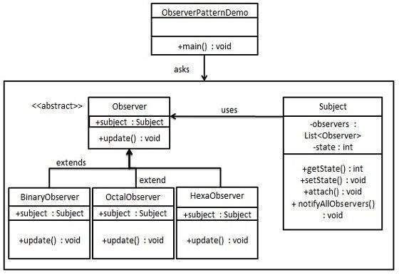

Disciplinas
-
TÉCNICAS AVANÇADAS DE DESENVOLVIMENTO DE SOFTWARE-T01-2024-2 Concluído
Materiais
Neste módulo, você estudou um pouco sobre o desenvolvimento baseado em componentes e sua importância no desenvolvimento Web. Vamos explorar agora como os padrões de projeto podem ser aplicados nesse contexto?
Os padrões de projeto são soluções comprovadas para problemas comuns no desenvolvimento de software. Neste fórum, convido você a discutir sobre como esses padrões podem ser aplicados de maneira eficaz no desenvolvimento baseado em componentes.
Conteúdo
Primeiro, veja as indicações da curadoria, realize pesquisas e veja estas fontes de informações adicionais sobre o tema:
- 1. Websites e Tutoriais Online:
- TutorialsPoint - Design Patterns: Este site oferece explicações detalhadas e exemplos de vários padrões de projeto.
- Refactoring Guru - Design Patterns: Este site fornece informações detalhadas sobre padrões de projeto com exemplos práticos.
- DZone - Design Patterns: DZone é uma comunidade de desenvolvedores que oferece uma série de artigos sobre padrões de projeto.
- 2. Vídeos e Cursos Online:
- Plataformas de aprendizado online, como Udemy, Coursera e edX, oferecem cursos dedicados a padrões de projeto. Você pode pesquisar por cursos específicos em suas plataformas preferidas.
O que fazer para participar do fórum:
- Escolha um padrão de projeto amplamente reconhecido (por exemplo, Singleton, Factory Method, Observer, etc) e explique como ele pode ser aplicado no contexto do desenvolvimento baseado em componentes.
- Forneça um exemplo prático de como esse padrão de projeto pode ser implementado em um sistema baseado em componentes (link, código, componente, repositório etc).
Questões para discussão:
- Como a aplicação de padrões de projeto pode facilitar o desenvolvimento baseado em componentes?
- Quais são os benefícios de usar padrões de projeto em sistemas compostos por componentes reutilizáveis?
Resolução.
Padrão de projeto: Observer (Observador)- Aplicando Observer no contexto do desenvolvimento baseado em componentes.
- Subject é um objeto que tem métodos para anexar e desanexar observadores a um objeto cliente.
- Exemplo de implementação do observer em um sistema de componentes.
- Sistema de monitoramento onde um componente central de dados e vários painéis que exibem diferentes partes desses dados. Podendo usar o padrão Observer para garantir que todos os painéis sejam atualizados automaticamente sempre que o componente de dados central recebe novas informações.
O padrão Observer é usado quando há um relacionamento um-para-muitos entre objetos, quando um objeto é modificado, seus objetos dependentes devem ser notificados automaticamente.
O padrão Observer usa três classes (Subject, Observer e Client).

Esse padrão é amplamente utilizado em interfaces de usuário e sistemas que exigem que vários componentes atualizem simultaneamente suas exibições ou funções ao detectar mudanças de estado em outro componente.
// Criar classe Subject.
class DataSubject {
constructor () {
this.observers = [];
this.data = null;
}
// Inscreve os observer
addObserver(observer) {
this.observers.push(observer);
}
// Notifica os observer
notifyObservers() {
this.observers.forEach(
observer => observer.update(this.data)
);
}
// Atualiza os dados e notifica os observer
setData(newData) {
this.data = newData;
this.notifyObservers();
}
};
// Crie a classe Observer.
class DataPanel {
update(data) {
console.log("Painel atualizado com dados novos, ", data);
}
};
// Exemplo de uso
const dataSubject = new DataSubject();
const panel1 = new DataPanel();
const panel2 = new DataPanel();
dataSubject.addObserver(panel1);
dataSubject.addObserver(panel2);
// Saída
dataSubject.setData("Serafim");
- Como a aplicação de padrões de projeto pode facilitar o desenvolvimento baseado em componentes?
- Padrões de projeto com Observer facilitam o desenvolvimento complexo, permitindo que os componentes se comuniquem e reajam a mudanças sem depender diretamente uns dos outros. Simplificando a manutenção e a escalabilidade, novos componente podem ser adicionados como observers sem alterar a lógica existente.
- Quais são os benefícios de usar padrões de projeto em sistemas compostos por componentes reutilizáveis?
- Padrões de projeto com Observer padronizam as interações e evitam o código duplicado, facilitando a composição de novos sistemas a partir de componentes já existentes, estabelecendo uma linguagem comum para comunicação entre os componentes, permitindo uma maior flexibilidade.